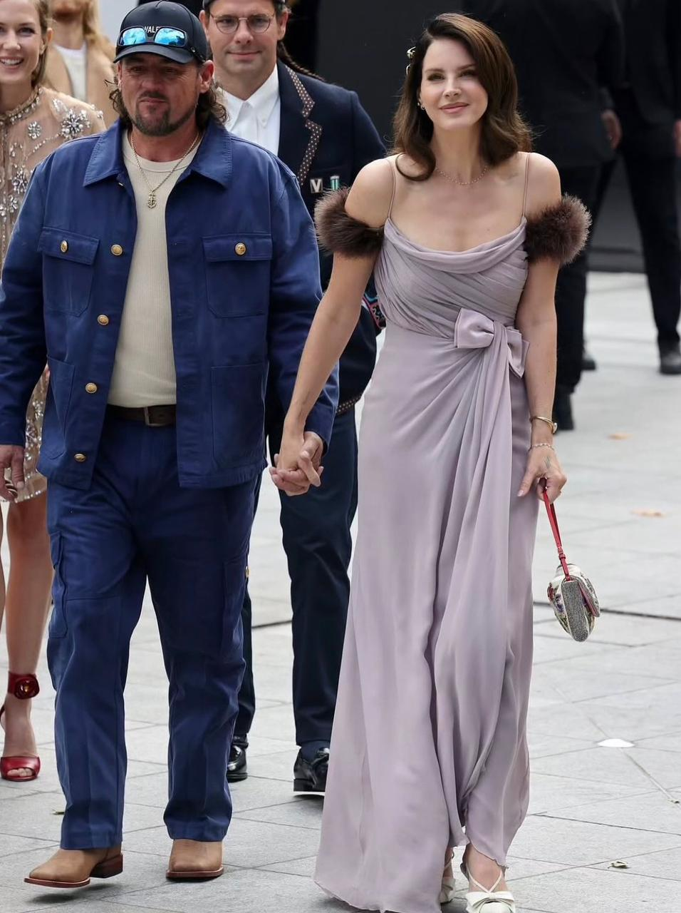

Lana Del Rey prestigia a semana de moda de Paris com Jeremy Dufrene
Cantora e o marido esbanjaram simpatia neste domingo (05.10) no desfile da Valentino.
Ler mais...Cantora e o marido esbanjaram simpatia neste domingo (05.10) no desfile da Valentino.
Ler mais...Como fazer o “hard chic”? Pergunte a Daniel Roseberry, diretor criativo da Schiaparelli, que levou a moda ao encontro da arte no museu George Pompidou. “O prêt-à-porter Schiaparelli sempre foi o cruzamento entre sucesso comercial e laboratório criativo”, ele diz — e faz.
Ler mais...Valentino
Hermès

Comme Des Garçons
Alaïa

Balenciaga